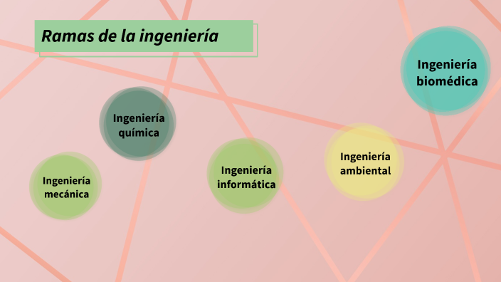
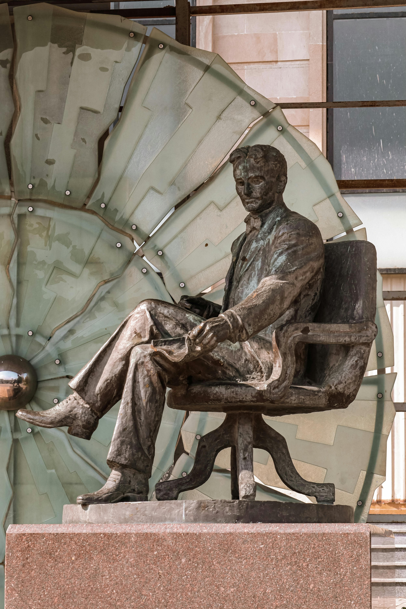
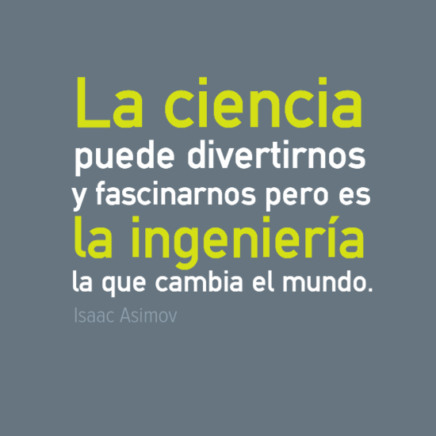

Historia del Día del Ingeniero en Colombia
En Colombia, el Día del Ingeniero se celebra el 17 de agosto en memoria de
Francisco José de Caldas, conocido como el “Sabio Caldas”...
El objetivo de esta conmemoración es resaltar el trabajo de los ingenieros...

¿Quiénes pueden considerarse ingenieros? – Ramas de la Ingeniería
Los ingenieros son profesionales que aplican ciencia, matemáticas y creatividad...
- Ingeniería Civil: diseño y construcción...
- Ingeniería Mecánica: estudio y diseño de máquinas...
- Ingeniería Eléctrica: generación y transmisión de energía...
- Ingeniería Electrónica: telecomunicaciones, robótica...
- Ingeniería Industrial: optimización de procesos...
- Ingeniería de Sistemas: software, IA, ciberseguridad...
- Ingeniería Química: procesos industriales y petroquímica...
- Ingeniería Ambiental: cuidado del medio ambiente...
- Ingeniería Biomédica: prótesis y biotecnología médica...

Principales Aportes de la Ingeniería a la Sociedad
La ingeniería ha sido el motor del progreso humano...
- Infraestructura: carreteras, aeropuertos...
- Tecnología y comunicación: Internet, satélites...
- Salud: equipos médicos, biotecnología...
- Energía: renovables, eficiencia...
- Economía y producción: industrialización...
- Medio ambiente: reciclaje y cambio climático...
Ingenieros Destacados en la Historia
En Colombia
- Francisco José de Caldas: prócer de la independencia.
- Julio Garavito Armero: aparece en el billete de $20.000.
- Guillermo González Zuleta: pionero de la aeronáutica.
En el mundo
- Leonardo da Vinci: inventor y visionario.
- Nikola Tesla: pionero en electricidad.
- Isambard Kingdom Brunel: grandes obras de infraestructura.
- Elon Musk: SpaceX, Tesla y energías renovables.

Retos Actuales de la Ingeniería en el Siglo XXI
En el mundo actual, la ingeniería enfrenta desafíos globales...
- Desarrollo sostenible: energías limpias.
- Inteligencia artificial: automatización y empleo.
- Seguridad cibernética: protección digital.
- Exploración espacial: colonización de planetas.
- Salud global: biotecnología y terapias.
- Infraestructura resiliente: desastres y clima.
Frases Célebres sobre la Ingeniería
“Los científicos sueñan con hacer grandes cosas. Los ingenieros las hacen.” – James A. Michener
“La ingeniería es el arte de dirigir los grandes recursos...” – Thomas Tredgold
“La ingeniería es el arte de hacer posible lo imposible.” – Anónimo
“Un buen ingeniero piensa en soluciones, no en problemas.” – Reflexión moderna
